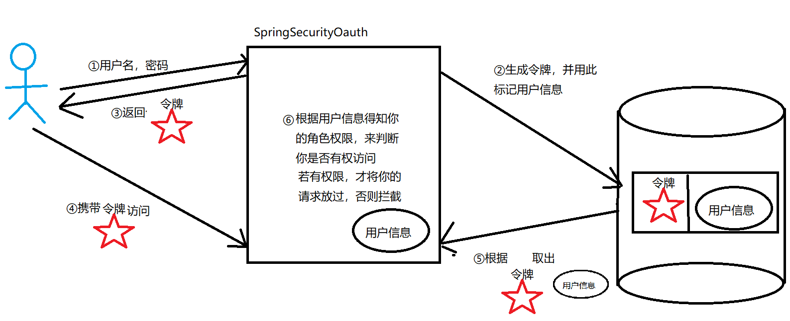
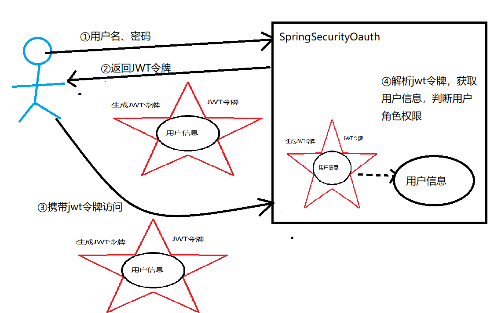

普通Token令牌 vs. JWT令牌
普通Token令牌 vs. JWT令牌
SpringSecurityOauth2令牌
参考： SpringSecurityOauth2令牌
令牌分类
常见的令牌有两种：普通令牌Token 和 JWT令牌
JWT令牌请见博文：浅析JWT
普通令牌
唯一标识存储在数据库或内存中的用户信息，在认证时，SpringSecurity服务端会拿着普通令牌去数据库中查询用户信息来实现认证鉴权。
JWT令牌
JWT令牌本身就存储着用户信息，在认证时，SpringSecurity从JWT令牌中按照约定的加密算法，解析出用户信息即可实现认证，不需要借助数据库等进行存储，进一步提高了认证鉴权的性能。
普通Token令牌
普通令牌是SpringSecurityOauth2给客户端颁发的一个无含义的令牌，在令牌发布时，SpringSecurityOauth2将用户信息存储到程序指定的存储位置，并用普通令牌唯一标识这个存储信息，当用户再次携带令牌访问时，SpringSecurityOauth2会根据令牌查询用户信息，进而实现权限角色的限制。
普通令牌需要一个存储用户信息的地方，这个地方可以本地内存，也可以是数据库（Redis、Mysql）。
基于本地内存存储
| 测试项 | 测试结果 |
|---|---|
| 同一个认证服务器同一个用户多次调用发布令牌 | 会返回同一个令牌（access_token、refresh_token） |
| 调用刷新token | 1. refresh_token本身是不会变化，无论刷新几次 2. 刷新后原access_token立即失效，并生成新的access_token. |
| 多台认证服务器同一个用户多次调用发布令牌 | 1.不同的认证服务器发布令牌各不相同 |
| 用户信息的获取方式 | 通过调用/oauth/check_token去获取用户认证信息 |
结论
- 基于内存存储用户信息的方式，认证服务器将用户信息存储在各自JVM运行时内存中；
- 当资源服务器获得access_token后，会通过远程调用认证服务器的
/oauth/check_token，校验token，获得用户信息； - 在微服务场景下不适用；
基于Redis缓存存储
| 测试项 | 测试结果 |
|---|---|
| 同一个认证服务器同一个用户多次调用发布令牌 | 会返回同一个令牌（access_token、refresh_token） |
| 调用刷新token | 1. refresh_token本身是不会变化，无论刷新几次 2. 刷新后原access_token立即失效，并生成新的access_token. |
| 多台认证服务器同一个用户多次调用发布令牌 | 不同的认证服务器发布令牌是相同的，不论哪个认证服务器，都会返回同一个access_token和refresh_token |
| 用户信息的获取方式 | 从Redis数据库中获取 |
结论
- 基于Redis存储用户信息的方式，认证服务器将用户信息存储到指定的Redis数据库中；
- 当资源服务获取到access_token时，会到Redis中获取用户信息；
- 在微服务场景下适用；
其中：access_token就是所说的普通Token。
JWT令牌
JWT令牌的方式就无需数据库的介入，JWT令牌中就包含着用户的信息，SpringSecurityOauth在发布令牌时，会将用户信息放入JWT令牌中，用户拿着JWT令牌时，SpringSecurityOauth从中获取到用户信息，实现用户权限的控制。
JWT不需要后端进行存储。
| 测试项 | 测试结果 |
|---|---|
| 同一个认证服务器同一个用户多次调用发布令牌 | 同一个认证服务器会返回不同的令牌（access_token、refresh_token） |
| 调用刷新token | 1. refresh_token每请求依次就会变一次 2. 刷新后原access_token不会失效，并生成新的access_token. |
| 多台认证服务器同一个用户多次调用发布令牌 | 不同的认证服务器发布令牌是不同的 |
| 用户信息的获取方式 | 从JWT令牌中获取 |
结论
- 基于JWT令牌的认证服务器，用户信息存储到令牌中；
- 当资源服务获取到access_token后，会解析这个JWT类型的access_token，从中会获取到用户信息；
- 微服务场景下不适用；
JWT令牌也不能说微服务场景下不适用，只是相对于基于数据库存储的普通令牌来说，重复请求的JWT是不一样的，也就是说JWT和用户信息是一种多对一的映射关系，可能微服务场景下，更常见的是令牌和用户是一对一的映射关系。
应用场景
APP服务端接口，用 JWT or Redis+Token，分别有什么优势？
JWT属于无状态设计，用户登陆的信息存放在JWT加密数据里，这种设计下服务器不需要存储JWT密文，只需要解密就能拿到授权信息等用户信息。这种设计是一种利用服务器的计算力减少Token设计下数据库及缓存的压力和设计复杂度，因此它的本质就是不存储登陆授权，而是通过密文本身保存授权信息。
Token加Redis设计，是一种登陆后分配随机Token，然后记录Token与用户信息这种一一映射关系的设计。
很明显，这两种设计的区别就在于Token是否是需要服务器存储，每次验权是否需要查询数据库。JWT不需要服务器存储，信息本身就存储于JWT本身，这种模式无需使用数据库。
但是这种流行的JWT有一个设计上的缺陷，它通过密文传输用户信息，那么服务器在这种基础结构下是无法做到关闭用户登陆授权的操作，如果用户的JWT密文被偷窃，那么黑客就能以用户身份登陆，并且即使知道密文丢失，也无法关闭被偷窃的JWT密文。为了应对这一问题，可以使用JWT内部验证有效期和JWT黑名单模式，但是有效期始终无法做到及时停止JWT授权，这是一个治标不治本的方法。而JWT黑名单模式，则需要数据库或内存存储黑名单，那么，这实际上违背了JWT的免数据库设计原则。
因此，如果严格按照两种模式设计，Token模式适合较高安全度和用户登陆等信息分析的系统，如：普通的博客、阅读器等等，这种服务允许不严格的登陆授权，即使密文丢失也不会造成用户的严重损失，却能获得较高的服务性能。
Token模式，必须配合数据库进行存储和查询，虽然性能相对JWT会低一些（随着数据库和缓存性能的提升，这一次的查询操作其实不会造成明显的性能影响），但Token模式却能做到及时的授权关闭，已经登陆授权可见可查，每一次Token都会有对应的记录。因此Token模式适合较高安全度和用户登陆等信息分析的系统，如政府系统，支付系统等不可能允许高权限的Token被偷窃却不能及时关闭授权。
结论：
- JWT，适合轻量的系统和权限不严格系统。
- Token，适合重量系统和权限有严格要求的系统。
Token
普通的Token方式采用的是：登录-->生成随机字符串（Token）--> 服务器保存Token与用户信息的对应关系，对应用户利用Token校验的流程是 Token-->查询Token对应用户信息-->各系统根据用户信息 进行业务处理。
很明显可以看出，Token模式下的字符串实际上不需要和用户信息有任何关联，生成的Token字符串的要求就是唯一标识，不能被其他用户占有，否则就会出现用户登录后实际上是以其他人身份进行业务处理。如果字符串是随机生成，那么黑客就无法猜测Token的生成规律，也无法从Token直接猜测到用户相关信息。
JWT
JWT采用的生成：登录-->生成带有用户数据的加密字符串（该字符串服务器并不存储，直接下发给客户端）
校验：客户端将存储的JWT密文带上-->服务器解密密文，获取到用户信息
可以看出，JWT的凭证不仅要求唯一，还要求密文本身实际上是带有了用户信息，当然这块可以是非敏感信息，这只是实现上的细节区别，和结构本身没有特别大的关联。服务器本身并没有存储这次JWT密文，每次服务器的处理都是直接解密JWT密文。这样做的好处就是服务架构内直接抛弃了登录相关的传统Token系统，并且服务器不再管理登录状态，Token有效状态等问题。
而JWT带来的问题，凭证实际上的一串密文，更多的用户信息或session信息需要更大的密文来存储，进而每次请求都带上JWT就会使网络传输的内容变大，加大了网络开销；凭证是一串密文，那么如果黑客破解了服务器的加密方式，那么密文实际上就是用户的明文信息在网络上传输（这就是传说中的裸奔），黑客可以直接伪造JWT登录或通过JWT密文获取到用户信息；JWT本身不管理JWT的有效性，一旦密文被偷窃，无法做到关闭掉黑客的授权。
核心缺点：网络开销、黑客的窃取|篡改|伪装、无法及时关闭授权。
参考文档：
APP服务端接口，用JWT还是用Redis和Token，分别有什么优势
 微信
微信